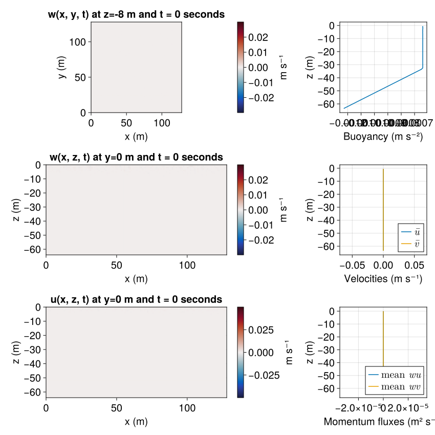

Langmuir turbulence example
This example implements a Langmuir turbulence simulation similar to the one reported in section 4 of
This example demonstrates
How to run large eddy simulations with surface wave effects via the Craik-Leibovich approximation.
How to specify time- and horizontally-averaged output.
Install dependencies
First let's make sure we have all required packages installed.
using Pkg
pkg"add Oceananigans, CairoMakie, CUDA"using Oceananigans
using Oceananigans.Units: minute, minutes, hours
using CUDAModel set-up
To build the model, we specify the grid, Stokes drift, boundary conditions, and Coriolis parameter.
Domain and numerical grid specification
We use a modest resolution and the same total extent as Wagner et al. (2021),
grid = RectilinearGrid(GPU(), size=(128, 128, 64), extent=(128, 128, 64))128×128×64 RectilinearGrid{Float64, Periodic, Periodic, Bounded} on CUDAGPU with 3×3×3 halo
├── Periodic x ∈ [0.0, 128.0) regularly spaced with Δx=1.0
├── Periodic y ∈ [0.0, 128.0) regularly spaced with Δy=1.0
└── Bounded z ∈ [-64.0, 0.0] regularly spaced with Δz=1.0The Stokes Drift profile
The surface wave Stokes drift profile prescribed in Wagner et al. (2021), corresponds to a 'monochromatic' (that is, single-frequency) wave field.
A monochromatic wave field is characterized by its wavelength and amplitude (half the distance from wave crest to wave trough), which determine the wave frequency and the vertical scale of the Stokes drift profile.
g = Oceananigans.defaults.gravitational_acceleration
amplitude = 0.8 # m
wavelength = 60 # m
wavenumber = 2π / wavelength # m⁻¹
frequency = sqrt(g * wavenumber) # s⁻¹
# The vertical scale over which the Stokes drift of a monochromatic surface wave
# decays away from the surface is `1/2wavenumber`, or
const vertical_scale = wavelength / 4π
# Stokes drift velocity at the surface
const Uˢ = amplitude^2 * wavenumber * frequency # m s⁻¹0.06791774197745354The const declarations ensure that Stokes drift functions compile on the GPU. To run this example on the CPU, replace GPU() with CPU() in the RectilinearGrid constructor above.
The Stokes drift profile is
uˢ(z) = Uˢ * exp(z / vertical_scale)uˢ (generic function with 1 method)and its z-derivative is
∂z_uˢ(z, t) = 1 / vertical_scale * Uˢ * exp(z / vertical_scale)∂z_uˢ (generic function with 1 method)Oceananigans implements the Craik-Leibovich approximation for surface wave effects using the Lagrangian-mean velocity field as its prognostic momentum variable. In other words, model.velocities.u is the Lagrangian-mean $x$-velocity beneath surface waves. This differs from models that use the Eulerian-mean velocity field as a prognostic variable, but has the advantage that $u$ accounts for the total advection of tracers and momentum, and that $u = v = w = 0$ is a steady solution even when Coriolis forces are present. See the physics documentation for more information.
Finally, we note that the time-derivative of the Stokes drift must be provided if the Stokes drift and surface wave field undergoes forced changes in time. In this example, the Stokes drift is constant and thus the time-derivative of the Stokes drift is 0.
Boundary conditions
At the surface $z = 0$, Wagner et al. (2021) impose
τx = -3.72e-5 # m² s⁻², surface kinematic momentum flux
u_boundary_conditions = FieldBoundaryConditions(top = FluxBoundaryCondition(τx))Oceananigans.FieldBoundaryConditions, with boundary conditions
├── west: DefaultBoundaryCondition (FluxBoundaryCondition: Nothing)
├── east: DefaultBoundaryCondition (FluxBoundaryCondition: Nothing)
├── south: DefaultBoundaryCondition (FluxBoundaryCondition: Nothing)
├── north: DefaultBoundaryCondition (FluxBoundaryCondition: Nothing)
├── bottom: DefaultBoundaryCondition (FluxBoundaryCondition: Nothing)
├── top: FluxBoundaryCondition: -3.72e-5
└── immersed: DefaultBoundaryCondition (FluxBoundaryCondition: Nothing)Wagner et al. (2021) impose a linear buoyancy gradient N² at the bottom along with a weak, destabilizing flux of buoyancy at the surface to faciliate spin-up from rest.
Jᵇ = 2.307e-8 # m² s⁻³, surface buoyancy flux
N² = 1.936e-5 # s⁻², initial and bottom buoyancy gradient
b_boundary_conditions = FieldBoundaryConditions(top = FluxBoundaryCondition(Jᵇ),
bottom = GradientBoundaryCondition(N²))Oceananigans.FieldBoundaryConditions, with boundary conditions
├── west: DefaultBoundaryCondition (FluxBoundaryCondition: Nothing)
├── east: DefaultBoundaryCondition (FluxBoundaryCondition: Nothing)
├── south: DefaultBoundaryCondition (FluxBoundaryCondition: Nothing)
├── north: DefaultBoundaryCondition (FluxBoundaryCondition: Nothing)
├── bottom: GradientBoundaryCondition: 1.936e-5
├── top: FluxBoundaryCondition: 2.307e-8
└── immersed: DefaultBoundaryCondition (FluxBoundaryCondition: Nothing)Note that Oceananigans uses "positive upward" conventions for all fluxes. In consequence, a negative flux at the surface drives positive velocities, and a positive flux of buoyancy drives cooling.
Coriolis parameter
Wagner et al. (2021) use
coriolis = FPlane(f=1e-4) # s⁻¹FPlane{Float64}(f=0.0001)which is typical for mid-latitudes on Earth.
Model instantiation
We are ready to build the model. We use a fifth-order Weighted Essentially Non-Oscillatory (WENO) advection scheme and the AnisotropicMinimumDissipation model for large eddy simulation. Because our Stokes drift does not vary in $x, y$, we use UniformStokesDrift, which expects Stokes drift functions of $z, t$ only.
model = NonhydrostaticModel(; grid, coriolis,
advection = WENO(order=9),
tracers = :b,
buoyancy = BuoyancyTracer(),
stokes_drift = UniformStokesDrift(∂z_uˢ=∂z_uˢ),
boundary_conditions = (u=u_boundary_conditions, b=b_boundary_conditions))NonhydrostaticModel{GPU, RectilinearGrid}(time = 0 seconds, iteration = 0)
├── grid: 128×128×64 RectilinearGrid{Float64, Periodic, Periodic, Bounded} on CUDAGPU with 5×5×5 halo
├── timestepper: RungeKutta3TimeStepper
├── advection scheme: WENO{5, Float64, Float32}(order=9)
├── tracers: b
├── closure: Nothing
├── buoyancy: BuoyancyTracer with ĝ = NegativeZDirection()
└── coriolis: FPlane{Float64}(f=0.0001)Initial conditions
We make use of random noise concentrated in the upper 4 meters for buoyancy and velocity initial conditions,
Ξ(z) = randn() * exp(z / 4)Our initial condition for buoyancy consists of a surface mixed layer 33 m deep, a deep linear stratification, plus noise,
initial_mixed_layer_depth = 33 # m
stratification(z) = z < - initial_mixed_layer_depth ? N² * z : N² * (-initial_mixed_layer_depth)
bᵢ(x, y, z) = stratification(z) + 1e-1 * Ξ(z) * N² * model.grid.Lzbᵢ (generic function with 1 method)The simulation we reproduce from Wagner et al. (2021) is zero Lagrangian-mean velocity. This initial condition is consistent with a wavy, quiescent ocean suddenly impacted by winds. To this quiescent state we add noise scaled by the friction velocity to $u$ and $w$.
u★ = sqrt(abs(τx))
uᵢ(x, y, z) = u★ * 1e-1 * Ξ(z)
wᵢ(x, y, z) = u★ * 1e-1 * Ξ(z)
set!(model, u=uᵢ, w=wᵢ, b=bᵢ)Setting up the simulation
simulation = Simulation(model, Δt=45.0, stop_time=4hours)Simulation of NonhydrostaticModel{GPU, RectilinearGrid}(time = 0 seconds, iteration = 0)
├── Next time step: 45 seconds
├── Elapsed wall time: 0 seconds
├── Wall time per iteration: NaN days
├── Stop time: 4 hours
├── Stop iteration: Inf
├── Wall time limit: Inf
├── Minimum relative step: 0.0
├── Callbacks: OrderedDict with 4 entries:
│ ├── stop_time_exceeded => 4
│ ├── stop_iteration_exceeded => -
│ ├── wall_time_limit_exceeded => e
│ └── nan_checker => }
├── Output writers: OrderedDict with no entries
└── Diagnostics: OrderedDict with no entriesWe use the TimeStepWizard for adaptive time-stepping with a Courant-Freidrichs-Lewy (CFL) number of 1.0,
conjure_time_step_wizard!(simulation, cfl=1.0, max_Δt=1minute)Nice progress messaging
We define a function that prints a helpful message with maximum absolute value of $u, v, w$ and the current wall clock time.
using Printf
function progress(simulation)
u, v, w = simulation.model.velocities
# Print a progress message
msg = @sprintf("i: %04d, t: %s, Δt: %s, umax = (%.1e, %.1e, %.1e) ms⁻¹, wall time: %s\n",
iteration(simulation),
prettytime(time(simulation)),
prettytime(simulation.Δt),
maximum(abs, u), maximum(abs, v), maximum(abs, w),
prettytime(simulation.run_wall_time))
@info msg
return nothing
end
simulation.callbacks[:progress] = Callback(progress, IterationInterval(20))Callback of progress on IterationInterval(20)Output
A field writer
We set up an output writer for the simulation that saves all velocity fields, tracer fields, and the subgrid turbulent diffusivity.
output_interval = 5minutes
fields_to_output = merge(model.velocities, model.tracers)
simulation.output_writers[:fields] =
JLD2Writer(model, fields_to_output,
schedule = TimeInterval(output_interval),
filename = "langmuir_turbulence_fields.jld2",
overwrite_existing = true)JLD2Writer scheduled on TimeInterval(5 minutes):
├── filepath: langmuir_turbulence_fields.jld2
├── 4 outputs: (u, v, w, b)
├── array_type: Array{Float32}
├── including: [:grid, :coriolis, :buoyancy, :closure]
├── file_splitting: NoFileSplitting
└── file size: 44.7 KiBAn "averages" writer
We also set up output of time- and horizontally-averaged velocity field and momentum fluxes.
u, v, w = model.velocities
b = model.tracers.b
U = Average(u, dims=(1, 2))
V = Average(v, dims=(1, 2))
B = Average(b, dims=(1, 2))
wu = Average(w * u, dims=(1, 2))
wv = Average(w * v, dims=(1, 2))
simulation.output_writers[:averages] =
JLD2Writer(model, (; U, V, B, wu, wv),
schedule = AveragedTimeInterval(output_interval, window=2minutes),
filename = "langmuir_turbulence_averages.jld2",
overwrite_existing = true)JLD2Writer scheduled on TimeInterval(5 minutes):
├── filepath: langmuir_turbulence_averages.jld2
├── 5 outputs: (U, V, B, wu, wv) averaged on AveragedTimeInterval(window=2 minutes, stride=1, interval=5 minutes)
├── array_type: Array{Float32}
├── including: [:grid, :coriolis, :buoyancy, :closure]
├── file_splitting: NoFileSplitting
└── file size: 44.3 KiBRunning the simulation
This part is easy,
run!(simulation)[ Info: Initializing simulation...
[ Info: i: 0000, t: 0 seconds, Δt: 49.500 seconds, umax = (1.4e-03, 8.6e-04, 1.5e-03) ms⁻¹, wall time: 0 seconds
[ Info: ... simulation initialization complete (18.271 seconds)
[ Info: Executing initial time step...
[ Info: ... initial time step complete (4.030 seconds).
[ Info: i: 0020, t: 11.928 minutes, Δt: 28.546 seconds, umax = (2.8e-02, 1.3e-02, 2.2e-02) ms⁻¹, wall time: 23.348 seconds
[ Info: i: 0040, t: 20.414 minutes, Δt: 20.471 seconds, umax = (4.1e-02, 1.1e-02, 2.2e-02) ms⁻¹, wall time: 23.935 seconds
[ Info: i: 0060, t: 26.785 minutes, Δt: 17.420 seconds, umax = (4.7e-02, 1.6e-02, 2.3e-02) ms⁻¹, wall time: 24.343 seconds
[ Info: i: 0080, t: 32.227 minutes, Δt: 16.249 seconds, umax = (4.9e-02, 1.6e-02, 2.2e-02) ms⁻¹, wall time: 24.798 seconds
[ Info: i: 0100, t: 37.309 minutes, Δt: 15.839 seconds, umax = (5.0e-02, 1.8e-02, 2.4e-02) ms⁻¹, wall time: 25.284 seconds
[ Info: i: 0120, t: 42.350 minutes, Δt: 15.209 seconds, umax = (5.3e-02, 1.9e-02, 2.6e-02) ms⁻¹, wall time: 25.789 seconds
[ Info: i: 0140, t: 47.147 minutes, Δt: 14.353 seconds, umax = (5.6e-02, 1.9e-02, 2.6e-02) ms⁻¹, wall time: 26.271 seconds
[ Info: i: 0160, t: 51.873 minutes, Δt: 13.830 seconds, umax = (5.8e-02, 2.2e-02, 2.7e-02) ms⁻¹, wall time: 26.742 seconds
[ Info: i: 0180, t: 56.109 minutes, Δt: 13.121 seconds, umax = (5.9e-02, 2.4e-02, 3.2e-02) ms⁻¹, wall time: 27.299 seconds
[ Info: i: 0200, t: 1.007 hours, Δt: 12.571 seconds, umax = (6.2e-02, 2.5e-02, 3.3e-02) ms⁻¹, wall time: 27.858 seconds
[ Info: i: 0220, t: 1.075 hours, Δt: 11.358 seconds, umax = (6.7e-02, 2.6e-02, 2.9e-02) ms⁻¹, wall time: 28.229 seconds
[ Info: i: 0240, t: 1.133 hours, Δt: 11.720 seconds, umax = (6.4e-02, 2.9e-02, 3.7e-02) ms⁻¹, wall time: 28.772 seconds
[ Info: i: 0260, t: 1.193 hours, Δt: 11.097 seconds, umax = (6.5e-02, 3.2e-02, 3.3e-02) ms⁻¹, wall time: 29.282 seconds
[ Info: i: 0280, t: 1.253 hours, Δt: 11.601 seconds, umax = (6.6e-02, 3.0e-02, 3.4e-02) ms⁻¹, wall time: 29.902 seconds
[ Info: i: 0300, t: 1.317 hours, Δt: 11.555 seconds, umax = (7.1e-02, 3.3e-02, 3.4e-02) ms⁻¹, wall time: 30.230 seconds
[ Info: i: 0320, t: 1.378 hours, Δt: 10.922 seconds, umax = (7.1e-02, 3.2e-02, 3.9e-02) ms⁻¹, wall time: 30.699 seconds
[ Info: i: 0340, t: 1.434 hours, Δt: 10.367 seconds, umax = (7.1e-02, 3.4e-02, 3.3e-02) ms⁻¹, wall time: 31.221 seconds
[ Info: i: 0360, t: 1.492 hours, Δt: 10.381 seconds, umax = (7.5e-02, 3.8e-02, 3.7e-02) ms⁻¹, wall time: 31.653 seconds
[ Info: i: 0380, t: 1.550 hours, Δt: 10.226 seconds, umax = (7.2e-02, 3.9e-02, 3.7e-02) ms⁻¹, wall time: 32.138 seconds
[ Info: i: 0400, t: 1.607 hours, Δt: 10.575 seconds, umax = (7.4e-02, 3.8e-02, 3.6e-02) ms⁻¹, wall time: 32.631 seconds
[ Info: i: 0420, t: 1.664 hours, Δt: 9.981 seconds, umax = (7.4e-02, 4.4e-02, 3.8e-02) ms⁻¹, wall time: 33.097 seconds
[ Info: i: 0440, t: 1.717 hours, Δt: 9.759 seconds, umax = (7.7e-02, 4.1e-02, 3.9e-02) ms⁻¹, wall time: 33.573 seconds
[ Info: i: 0460, t: 1.766 hours, Δt: 9.716 seconds, umax = (7.5e-02, 4.0e-02, 4.1e-02) ms⁻¹, wall time: 34.119 seconds
[ Info: i: 0480, t: 1.820 hours, Δt: 9.793 seconds, umax = (7.8e-02, 4.7e-02, 4.1e-02) ms⁻¹, wall time: 34.561 seconds
[ Info: i: 0500, t: 1.873 hours, Δt: 9.423 seconds, umax = (8.0e-02, 4.4e-02, 4.3e-02) ms⁻¹, wall time: 35.095 seconds
[ Info: i: 0520, t: 1.925 hours, Δt: 9.852 seconds, umax = (7.7e-02, 4.7e-02, 3.9e-02) ms⁻¹, wall time: 35.701 seconds
[ Info: i: 0540, t: 1.980 hours, Δt: 9.789 seconds, umax = (7.7e-02, 4.5e-02, 4.0e-02) ms⁻¹, wall time: 36.072 seconds
[ Info: i: 0560, t: 2.033 hours, Δt: 9.615 seconds, umax = (8.0e-02, 4.4e-02, 4.3e-02) ms⁻¹, wall time: 36.597 seconds
[ Info: i: 0580, t: 2.083 hours, Δt: 9.360 seconds, umax = (7.8e-02, 4.3e-02, 4.1e-02) ms⁻¹, wall time: 37.072 seconds
[ Info: i: 0600, t: 2.134 hours, Δt: 9.194 seconds, umax = (8.2e-02, 4.7e-02, 4.1e-02) ms⁻¹, wall time: 37.550 seconds
[ Info: i: 0620, t: 2.185 hours, Δt: 9.092 seconds, umax = (8.1e-02, 4.9e-02, 4.2e-02) ms⁻¹, wall time: 38.123 seconds
[ Info: i: 0640, t: 2.235 hours, Δt: 8.834 seconds, umax = (8.3e-02, 4.9e-02, 4.2e-02) ms⁻¹, wall time: 38.629 seconds
[ Info: i: 0660, t: 2.283 hours, Δt: 8.935 seconds, umax = (7.9e-02, 5.4e-02, 4.3e-02) ms⁻¹, wall time: 39.154 seconds
[ Info: i: 0680, t: 2.332 hours, Δt: 8.901 seconds, umax = (8.2e-02, 5.2e-02, 4.4e-02) ms⁻¹, wall time: 39.679 seconds
[ Info: i: 0700, t: 2.380 hours, Δt: 8.844 seconds, umax = (8.5e-02, 4.9e-02, 4.2e-02) ms⁻¹, wall time: 40.204 seconds
[ Info: i: 0720, t: 2.429 hours, Δt: 8.692 seconds, umax = (7.9e-02, 5.5e-02, 4.1e-02) ms⁻¹, wall time: 40.778 seconds
[ Info: i: 0740, t: 2.477 hours, Δt: 8.402 seconds, umax = (8.1e-02, 5.0e-02, 4.3e-02) ms⁻¹, wall time: 41.206 seconds
[ Info: i: 0760, t: 2.523 hours, Δt: 8.604 seconds, umax = (8.0e-02, 5.4e-02, 4.6e-02) ms⁻¹, wall time: 41.711 seconds
[ Info: i: 0780, t: 2.572 hours, Δt: 8.758 seconds, umax = (8.3e-02, 5.1e-02, 4.0e-02) ms⁻¹, wall time: 42.195 seconds
[ Info: i: 0800, t: 2.620 hours, Δt: 8.567 seconds, umax = (8.3e-02, 5.7e-02, 4.3e-02) ms⁻¹, wall time: 42.728 seconds
[ Info: i: 0820, t: 2.667 hours, Δt: 8.652 seconds, umax = (8.2e-02, 5.6e-02, 4.1e-02) ms⁻¹, wall time: 43.274 seconds
[ Info: i: 0840, t: 2.715 hours, Δt: 8.539 seconds, umax = (8.5e-02, 5.5e-02, 4.4e-02) ms⁻¹, wall time: 43.777 seconds
[ Info: i: 0860, t: 2.762 hours, Δt: 8.378 seconds, umax = (8.7e-02, 6.1e-02, 4.3e-02) ms⁻¹, wall time: 44.354 seconds
[ Info: i: 0880, t: 2.808 hours, Δt: 8.405 seconds, umax = (8.2e-02, 6.1e-02, 5.1e-02) ms⁻¹, wall time: 44.778 seconds
[ Info: i: 0900, t: 2.852 hours, Δt: 8.092 seconds, umax = (8.7e-02, 6.1e-02, 4.7e-02) ms⁻¹, wall time: 45.284 seconds
[ Info: i: 0920, t: 2.896 hours, Δt: 8.589 seconds, umax = (8.6e-02, 5.8e-02, 4.6e-02) ms⁻¹, wall time: 45.772 seconds
[ Info: i: 0940, t: 2.941 hours, Δt: 8.642 seconds, umax = (8.5e-02, 6.0e-02, 4.5e-02) ms⁻¹, wall time: 46.276 seconds
[ Info: i: 0960, t: 2.988 hours, Δt: 8.445 seconds, umax = (8.2e-02, 5.7e-02, 4.6e-02) ms⁻¹, wall time: 46.773 seconds
[ Info: i: 0980, t: 3.032 hours, Δt: 8.578 seconds, umax = (8.3e-02, 6.0e-02, 4.5e-02) ms⁻¹, wall time: 47.312 seconds
[ Info: i: 1000, t: 3.079 hours, Δt: 8.294 seconds, umax = (8.5e-02, 5.8e-02, 4.6e-02) ms⁻¹, wall time: 47.812 seconds
[ Info: i: 1020, t: 3.125 hours, Δt: 8.305 seconds, umax = (8.7e-02, 6.4e-02, 4.4e-02) ms⁻¹, wall time: 48.357 seconds
[ Info: i: 1040, t: 3.169 hours, Δt: 7.909 seconds, umax = (8.4e-02, 6.4e-02, 4.7e-02) ms⁻¹, wall time: 49.044 seconds
[ Info: i: 1060, t: 3.213 hours, Δt: 8.247 seconds, umax = (8.5e-02, 6.1e-02, 4.6e-02) ms⁻¹, wall time: 49.435 seconds
[ Info: i: 1080, t: 3.259 hours, Δt: 8.531 seconds, umax = (8.5e-02, 5.9e-02, 4.3e-02) ms⁻¹, wall time: 50.053 seconds
[ Info: i: 1100, t: 3.306 hours, Δt: 8.403 seconds, umax = (8.3e-02, 6.0e-02, 4.4e-02) ms⁻¹, wall time: 50.453 seconds
[ Info: i: 1120, t: 3.352 hours, Δt: 8.099 seconds, umax = (8.9e-02, 6.3e-02, 4.5e-02) ms⁻¹, wall time: 50.971 seconds
[ Info: i: 1140, t: 3.396 hours, Δt: 7.781 seconds, umax = (8.9e-02, 6.3e-02, 4.4e-02) ms⁻¹, wall time: 51.462 seconds
[ Info: i: 1160, t: 3.439 hours, Δt: 7.871 seconds, umax = (8.9e-02, 6.7e-02, 4.9e-02) ms⁻¹, wall time: 51.994 seconds
[ Info: i: 1180, t: 3.482 hours, Δt: 8.028 seconds, umax = (9.3e-02, 6.4e-02, 4.4e-02) ms⁻¹, wall time: 52.486 seconds
[ Info: i: 1200, t: 3.527 hours, Δt: 8.154 seconds, umax = (8.9e-02, 6.4e-02, 5.4e-02) ms⁻¹, wall time: 53.004 seconds
[ Info: i: 1220, t: 3.573 hours, Δt: 8.197 seconds, umax = (8.6e-02, 6.8e-02, 5.8e-02) ms⁻¹, wall time: 53.501 seconds
[ Info: i: 1240, t: 3.618 hours, Δt: 8.114 seconds, umax = (8.6e-02, 6.7e-02, 5.4e-02) ms⁻¹, wall time: 54.036 seconds
[ Info: i: 1260, t: 3.663 hours, Δt: 8.122 seconds, umax = (9.0e-02, 6.5e-02, 5.2e-02) ms⁻¹, wall time: 54.532 seconds
[ Info: i: 1280, t: 3.705 hours, Δt: 8.288 seconds, umax = (9.0e-02, 6.5e-02, 4.7e-02) ms⁻¹, wall time: 55.069 seconds
[ Info: i: 1300, t: 3.750 hours, Δt: 8.185 seconds, umax = (9.1e-02, 6.3e-02, 4.3e-02) ms⁻¹, wall time: 55.569 seconds
[ Info: i: 1320, t: 3.796 hours, Δt: 8.045 seconds, umax = (9.3e-02, 6.0e-02, 4.6e-02) ms⁻¹, wall time: 56.102 seconds
[ Info: i: 1340, t: 3.840 hours, Δt: 7.981 seconds, umax = (8.7e-02, 6.0e-02, 4.7e-02) ms⁻¹, wall time: 56.787 seconds
[ Info: i: 1360, t: 3.884 hours, Δt: 7.764 seconds, umax = (8.9e-02, 6.7e-02, 5.2e-02) ms⁻¹, wall time: 57.159 seconds
[ Info: i: 1380, t: 3.928 hours, Δt: 7.590 seconds, umax = (8.9e-02, 5.9e-02, 5.0e-02) ms⁻¹, wall time: 57.753 seconds
[ Info: i: 1400, t: 3.970 hours, Δt: 7.708 seconds, umax = (8.8e-02, 5.6e-02, 4.6e-02) ms⁻¹, wall time: 58.157 seconds
[ Info: Simulation is stopping after running for 58.559 seconds.
[ Info: Simulation time 4 hours equals or exceeds stop time 4 hours.
Making a neat movie
We look at the results by loading data from file with FieldTimeSeries, and plotting vertical slices of $u$ and $w$, and a horizontal slice of $w$ to look for Langmuir cells.
using CairoMakie
time_series = (;
w = FieldTimeSeries("langmuir_turbulence_fields.jld2", "w"),
u = FieldTimeSeries("langmuir_turbulence_fields.jld2", "u"),
B = FieldTimeSeries("langmuir_turbulence_averages.jld2", "B"),
U = FieldTimeSeries("langmuir_turbulence_averages.jld2", "U"),
V = FieldTimeSeries("langmuir_turbulence_averages.jld2", "V"),
wu = FieldTimeSeries("langmuir_turbulence_averages.jld2", "wu"),
wv = FieldTimeSeries("langmuir_turbulence_averages.jld2", "wv"))
times = time_series.w.timesWe are now ready to animate using Makie. We use Makie's Observable to animate the data. To dive into how Observables work we refer to Makie.jl's Documentation.
n = Observable(1)
wxy_title = @lift string("w(x, y, t) at z=-8 m and t = ", prettytime(times[$n]))
wxz_title = @lift string("w(x, z, t) at y=0 m and t = ", prettytime(times[$n]))
uxz_title = @lift string("u(x, z, t) at y=0 m and t = ", prettytime(times[$n]))
fig = Figure(size = (850, 850))
ax_B = Axis(fig[1, 4];
xlabel = "Buoyancy (m s⁻²)",
ylabel = "z (m)")
ax_U = Axis(fig[2, 4];
xlabel = "Velocities (m s⁻¹)",
ylabel = "z (m)",
limits = ((-0.07, 0.07), nothing))
ax_fluxes = Axis(fig[3, 4];
xlabel = "Momentum fluxes (m² s⁻²)",
ylabel = "z (m)",
limits = ((-3.5e-5, 3.5e-5), nothing))
ax_wxy = Axis(fig[1, 1:2];
xlabel = "x (m)",
ylabel = "y (m)",
aspect = DataAspect(),
limits = ((0, grid.Lx), (0, grid.Ly)),
title = wxy_title)
ax_wxz = Axis(fig[2, 1:2];
xlabel = "x (m)",
ylabel = "z (m)",
aspect = AxisAspect(2),
limits = ((0, grid.Lx), (-grid.Lz, 0)),
title = wxz_title)
ax_uxz = Axis(fig[3, 1:2];
xlabel = "x (m)",
ylabel = "z (m)",
aspect = AxisAspect(2),
limits = ((0, grid.Lx), (-grid.Lz, 0)),
title = uxz_title)
wₙ = @lift time_series.w[$n]
uₙ = @lift time_series.u[$n]
Bₙ = @lift view(time_series.B[$n], 1, 1, :)
Uₙ = @lift view(time_series.U[$n], 1, 1, :)
Vₙ = @lift view(time_series.V[$n], 1, 1, :)
wuₙ = @lift view(time_series.wu[$n], 1, 1, :)
wvₙ = @lift view(time_series.wv[$n], 1, 1, :)
k = searchsortedfirst(znodes(grid, Face(); with_halos=true), -8)
wxyₙ = @lift view(time_series.w[$n], :, :, k)
wxzₙ = @lift view(time_series.w[$n], :, 1, :)
uxzₙ = @lift view(time_series.u[$n], :, 1, :)
wlims = (-0.03, 0.03)
ulims = (-0.05, 0.05)
lines!(ax_B, Bₙ)
lines!(ax_U, Uₙ; label = L"\bar{u}")
lines!(ax_U, Vₙ; label = L"\bar{v}")
axislegend(ax_U; position = :rb)
lines!(ax_fluxes, wuₙ; label = L"mean $wu$")
lines!(ax_fluxes, wvₙ; label = L"mean $wv$")
axislegend(ax_fluxes; position = :rb)
hm_wxy = heatmap!(ax_wxy, wxyₙ;
colorrange = wlims,
colormap = :balance)
Colorbar(fig[1, 3], hm_wxy; label = "m s⁻¹")
hm_wxz = heatmap!(ax_wxz, wxzₙ;
colorrange = wlims,
colormap = :balance)
Colorbar(fig[2, 3], hm_wxz; label = "m s⁻¹")
ax_uxz = heatmap!(ax_uxz, uxzₙ;
colorrange = ulims,
colormap = :balance)
Colorbar(fig[3, 3], ax_uxz; label = "m s⁻¹")
fig
And, finally, we record a movie.
frames = 1:length(times)
CairoMakie.record(fig, "langmuir_turbulence.mp4", frames, framerate=8) do i
n[] = i
endThis page was generated using Literate.jl.